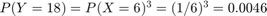
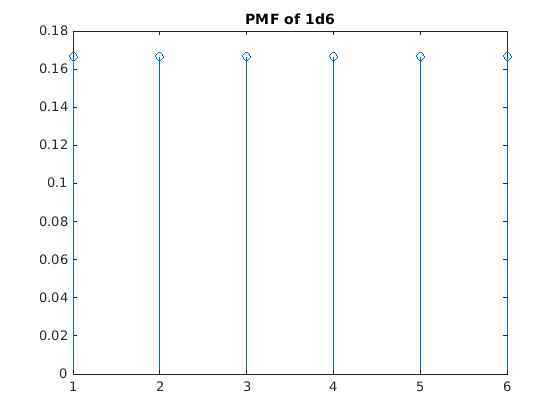
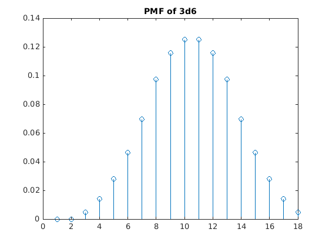
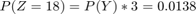
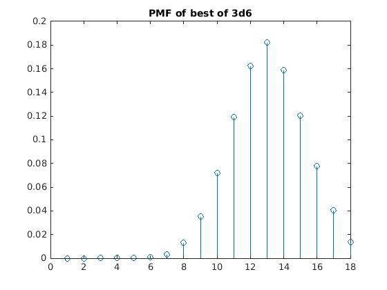
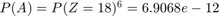

Contents
EpicQUESTion 1
X = event of a dice roll, Y = event of generating an ability score, Z = event of generating an ability score using the fun method
clc close all clear all M = 5; M = 1e6; % number of experiments to perform
Part A

% 6^3 permutations rolls = randi(6,3,M); % generate set of 3d6 net = sum(rolls,1); % sum rolls to get score fprintf("Sampled probability of score 18: %f", sum(net==18)/M);
Sampled probability of score 18: 0.004668
Part A theoretical
Dice roll uniform distribution
pmf_X = ones(6, 1).*1/6; % each dice roll independent joint_pmf_X = ones(6, 6, 6).*(1/6^3); % generate all permutations [X1, X2, X3] = ndgrid(1:6); Y = X1 + X2 + X3; pmf_Y = zeros(18, 1); for y=3:18 pmf_Y(y) = sum(joint_pmf_X(Y == y)); end fprintf("Probability of score 18 given PMF: %f", pmf_Y(18)); figure; stem(pmf_X); title("PMF of 1d6"); figure; stem(pmf_Y); title("PMF of 3d6");
Probability of score 18 given PMF: 0.004630 
Part B

rolls = randi(6,3,M,3); % generate 3 trials of 3d6 x = sum(rolls,1); % combine rolls for score y = sum(x==18,3); % calculate how many scores are 18 % Fraction of experiments resulting in score of 18 fprintf("Sampled probability of best of 3 score 18: %f", sum(y>0)/M);
Sampled probability of best of 3 score 18: 0.013770
Part B Theoretical
Triple outer product, not sure if there's a more elegant way of doing this
joint_pmf_Y = pmf_Y*pmf_Y'; joint_pmf_Y = reshape(joint_pmf_Y(:)*pmf_Y', 18, 18, 18); % generate all permutations [Y1, Y2, Y3] = ndgrid(1:18); Z = max(cat(4, Y1, Y2, Y3), [], 4); pmf_Z = zeros(18, 1); for z=3:18 pmf_Z(z) = sum(joint_pmf_Y(Z == z)); end fprintf("Probability of best of 3 score 18 given PMF: %f", pmf_Z(18)); figure; stem(pmf_Z); title("PMF of best of 3d6");
Probability of best of 3 score 18 given PMF: 0.013825
Part C

%M = 5e7; %Tuned for 64GB RAM M = 1e6; N = 1e0; n = 0; for i = 0:N % generate M 6-sets of best of 3 of 3d6 rolls = randi(6,3,3,6,M,'uint8'); x = sum(rolls,1); % get 3 scores y = sum(x==18,2); % check if 18 n = n + squeeze(sum(sum(y,3)==6)); % increment the number of Fontaines end % Will almost always be zero fprintf("Number of perfect humans found: %d\n", n); fprintf("Probability of perfect human: %e\n", n/(M*N)); fprintf("Number of trials: %e\n", M*N);
Number of perfect humans found: 0 Probability of perfect human: 0.000000e+00 Number of trials: 1.000000e+06
Part C GPU Compute
Lets try using GPU
M = 1e6; N = 1e3; n = 0; for i = 0:N rolls = randi(6,3,3,6,M,'uint8','gpuArray'); x = sum(rolls,1); % get 3 scores y = sum(x==18,2); % check if 18 n = n + squeeze(sum(sum(y,3)==6)); end fprintf("Number of perfect humans found: %d\n", n); fprintf("Probability of perfect human: %e\n", n/(M*N)); fprintf("Number of trials: %e\n", M*N);
Number of perfect humans found: 0 Probability of perfect human: 0.000000e+00 Number of trials: 1.000000e+09
Part C theoretical
fprintf("Probability of ideal character from PMF: %e", pmf_Z(18)^6);
Probability of ideal character from PMF: 6.981231e-12
Part D
rolls = randi(6,3,3,6,M); % generate M 6-sets of best of 3 of 3d6 x = sum(rolls,1); % get roll result y = sum(x==9,2) & ~sum((x>9),2); % check if has 9 and no greater % Fraction of experiments resulting in at least one 18 n = squeeze(sum(sum(y,3)==6)); fprintf("Sampled probability of totally average character: %e\n", n/M);
Sampled probability of totally average character: 0.000000e+00
Part D GPU Compute
M = 1e6; N = 1e3; %M = 5; n = 0; for i = 0:N rolls = randi(6,3,3,6,M,'uint8', 'gpuArray'); x = sum(rolls,1); % get 3 scores y = sum(x==9,2) & ~sum((x>9),2); % filter for 9's n = n + squeeze(sum(sum(y>0,3)==6)); % increment the number of Keenes end fprintf("Number of totally average humans found: %d\n", n); fprintf("Probability of totally average human: %e\n", n/(M*N)); fprintf("Number of trials: %e\n", M*N);
Number of totally average humans found: 2 Probability of totally average human: 2.000000e-09 Number of trials: 1.000000e+09
Part D theoretical
fprintf("Probability of totally average character from PMF: %e", pmf_Z(9)^6);
Probability of totally average character from PMF: 1.937542e-09